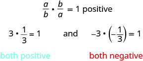

গুণাত্মক বিপরীত নির্ণয় করো
উৎস-অনুগত উপবিভাগ · m81286-fs-id1390478। সম্পূর্ণ বইয়ের অনুবাদ এখনও চলছে। গাণিতিক চিহ্ন, সংখ্যা ও মূল কাঠামো অক্ষুণ্ণ; প্রযোজ্য ক্ষেত্রে সূত্রের শব্দলেবেল বাংলায় অনূদিত। মূল ছবির ভিতরের ইংরেজি লেবেলের অর্থ বাংলা বিবরণে আছে। স্বাধীন শিক্ষক ও ভাষা-পর্যালোচনা বাকি। অন্য উপবিভাগের উৎস-লিঙ্কে ইন্টারনেট প্রয়োজন।
গুণাত্মক বিপরীত নির্ণয় করো
ভগ্নাংশ ও -এর মধ্যে একটি বিশেষ সম্পর্ক আছে। এমনই আর একটি জোড়া হল ও সম্পর্কটি কি তুমি বুঝতে পারছ? এদের একটির লব ও হর অন্যটির হর ও লবের জায়গায় আছে। প্রত্যেক জোড়ার ভগ্নাংশ দুটিকে গুণ করলে গুণফল হয়
এমন জোড়ার সংখ্যা দুটিকে পরস্পরের গুণাত্মক বিপরীত বলে।
কোনো অশূন্য ভগ্নাংশের গুণাত্মক বিপরীত পেতে তার লব ও হরের স্থান বদলাও। অর্থাৎ, লবের সংখ্যাটিকে হরে এবং হরের সংখ্যাটিকে লবে বসাও।
দুটি সংখ্যার গুণফল ধনাত্মক হতে হলে সংখ্যা দুটির চিহ্ন একই হতে হবে। তাই একটি সংখ্যা ও তার গুণাত্মক বিপরীতের চিহ্নও একই হয়।

ছবির ইংরেজি লেখার বাংলা পাঠ: লব a ও হর b-এর ভগ্নাংশকে লব b ও হর a-এর ভগ্নাংশ দিয়ে গুণ করলে ধনাত্মক 1 পাওয়া যায়; এখানে a ও b অশূন্য। বাঁ দিকের উদাহরণে 3-কে লব 1, হর 3-এর ভগ্নাংশ দিয়ে গুণ করলে 1 হয়; দুটি সংখ্যাই ধনাত্মক। ডান দিকের উদাহরণে ঋণাত্মক 3-কে ঋণাত্মক চিহ্নযুক্ত লব 1, হর 3-এর ভগ্নাংশ দিয়ে গুণ করলে 1 হয়; দুটি সংখ্যাই ঋণাত্মক।
গুণাত্মক বিপরীত পেতে চিহ্ন একই রাখো এবং ভগ্নাংশের লব ও হরের স্থান বদলাও। শূন্যের কোনো গুণাত্মক বিপরীত নেই। কেন? একটি সংখ্যা ও তার গুণাত্মক বিপরীতের গুণফল এমন কোনো সংখ্যা কি আছে, যার জন্য না। তাই -এর কোনো গুণাত্মক বিপরীত নেই।
অনুশীলন · এই প্রশ্নের লিঙ্ক
প্রত্যেকটি সংখ্যার গুণাত্মক বিপরীত নির্ণয় করো। তারপর যাচাই করো যে সংখ্যাটি ও তার গুণাত্মক বিপরীতের গুণফল
- ⓐ
- ⓑ
- ⓒ
- ⓓ
সমাধান
গুণাত্মক বিপরীত পেতে আমরা চিহ্ন একই রাখি এবং ভগ্নাংশের লব ও হরের স্থান বদলাই।
| ⓐ | |
| -এর গুণাত্মক বিপরীত নির্ণয় করো। | -এর গুণাত্মক বিপরীত । |
| যাচাই: | |
| সংখ্যাটি ও তার গুণাত্মক বিপরীত গুণ করো। | |
| লব দুটিকে গুণ করো এবং হর দুটিকে গুণ করো। | |
| লঘিষ্ঠ আকারে প্রকাশ করো। |
| ⓑ | |
| -এর গুণাত্মক বিপরীত নির্ণয় করো। | |
| সরল করো। | |
| যাচাই: | |
| ⓒ | |
| -এর গুণাত্মক বিপরীত নির্ণয় করো। | |
| যাচাই: | |
| ⓓ | |
| -এর গুণাত্মক বিপরীত নির্ণয় করো। | |
| -কে ভগ্নাংশের আকারে লেখো। | |
| -এর গুণাত্মক বিপরীত লেখো। | |
| যাচাই: | |
আগের একটি অধ্যায়ে আমরা বিপরীত সংখ্যা ও পরম মান নিয়ে কাজ করেছি। সারণি [fs-id1394345]-এ বিপরীত সংখ্যা, পরম মান ও গুণাত্মক বিপরীতের তুলনা দেখানো হয়েছে।
| বিপরীত সংখ্যা | পরম মান | গুণাত্মক বিপরীত |
| অশূন্য সংখ্যার চিহ্ন উল্টো হয়; শূন্যের বিপরীত সংখ্যা শূন্য | কখনও ঋণাত্মক হয় না | অশূন্য সংখ্যার চিহ্ন একই থাকে; ভগ্নাংশের লব ও হরের স্থান বদলায়। শূন্যের গুণাত্মক বিপরীত নেই |
অনুশীলন · এই প্রশ্নের লিঙ্ক
বাঁ দিকের স্তম্ভে দেওয়া প্রতিটি সংখ্যার জন্য ছকটি পূরণ করো:
| সংখ্যা | বিপরীত সংখ্যা | পরম মান | গুণাত্মক বিপরীত |
সমাধান
বিপরীত সংখ্যা পেতে অশূন্য সংখ্যার চিহ্ন বদলাও; শূন্যের বিপরীত সংখ্যা শূন্য। পরম মান পেতে ধনাত্মক সংখ্যাকে একই রাখো, কিন্তু ঋণাত্মক সংখ্যার বিপরীত সংখ্যা নাও; শূন্যের পরম মান শূন্য। গুণাত্মক বিপরীত পেতে অশূন্য সংখ্যার চিহ্ন একই রাখো এবং ভগ্নাংশের লব ও হরের স্থান বদলাও।
| সংখ্যা | বিপরীত সংখ্যা | পরম মান | গুণাত্মক বিপরীত |